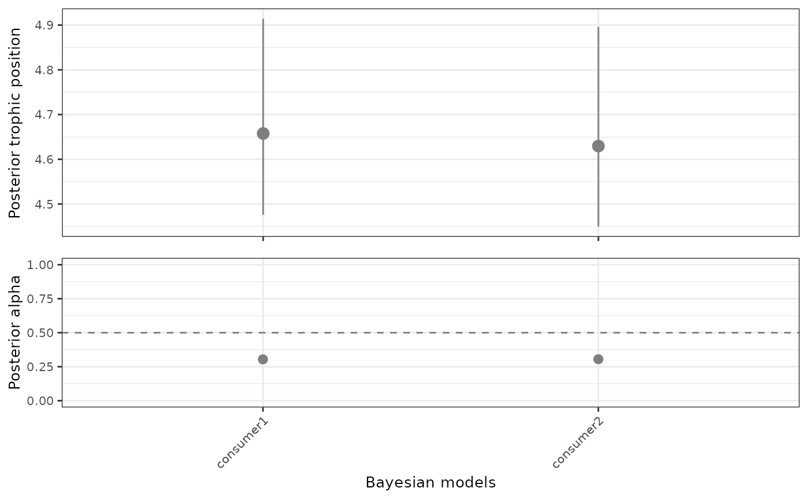

This function takes a named list of isotopeData class objects and calculates one or more Bayesian models of trophic position for each element of the list.
Usage
multiSpeciesTP(
siDataList = siDataList,
lambda = 2,
n.chains = 2,
n.adapt = 20000,
n.iter = 20000,
burnin = 20000,
thin = 10,
model = "oneBaseline",
print = FALSE,
quiet = FALSE,
...
)Arguments
- siDataList
a named list of isotopeData class objects.
- lambda
numerical value, represents the trophic level for baseline(s).
- n.chains
number of parallel chains for the model. If convergence diagnostics (such as Gelman-Rubin) are printed, n.chains needs to be >= 2.
- n.adapt
number of adaptive iterations, before the actual sampling.
- n.iter
number of iterations for Bayesian modelling (posterior sampling).
- burnin
number of iterations discarded as burn in.
- thin
thinning. Number of samples discarded while performing posterior sampling.
- model
string or list representing Bayesian models. At the moment they can be "oneBaseline", "twoBaselines" and/or "twoBaselinesFull".
logical value to indicate whether Gelman and Rubin's convergence diagnostic and summary of samples are printed.
- quiet
logical value to indicate whether messages generated during compilation will be suppressed, as well as the progress bar during adaptation.
- ...
additional arguments passed to this function.
Value
A list of 4 elements. The output is organised as lists nested. The first element (multiSpeciesTP) has the gg data frame returned by multiModelTP, the second element (df) is a data frame with summary information for all consumers and models, the third element (TPs) has the raw posterior trophic position for all consumers and models, and the last element (Alphas) has raw posterior of muDeltaN (if one baseline model was chosen) or alpha (if a two baselines model was chosen) for all consumers and models.
Examples
# \donttest{
siDataList <- list("consumer1" = generateTPData(consumer = "consumer1"),
"consumer2" = generateTPData(consumer = "consumer2"))
models <- multiSpeciesTP(siDataList, model = "twoBaselines", n.adapt = 500,
n.iter = 500, burnin = 500)
#> Compiling model graph
#> Resolving undeclared variables
#> Allocating nodes
#> Graph information:
#> Observed stochastic nodes: 206
#> Unobserved stochastic nodes: 14
#> Total graph size: 243
#>
#> Initializing model
#>
#> Compiling model graph
#> Resolving undeclared variables
#> Allocating nodes
#> Graph information:
#> Observed stochastic nodes: 206
#> Unobserved stochastic nodes: 14
#> Total graph size: 243
#>
#> Initializing model
#>
credibilityIntervals(models$df, x = "consumer")

# }